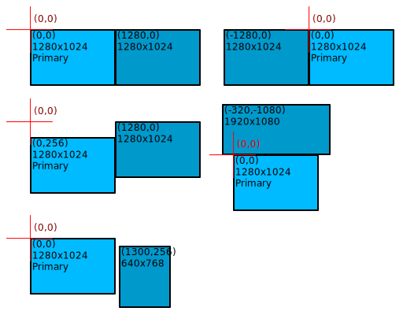

1. Introduction
This section is non-normative.
Operating systems generally allow users to connect multiple screens to a single device and arrange them virtually to extend the overall visual workspace.
A variety of applications use platform tools to place their content in such multi-screen environments, but web application developers are limited by existing APIs, which were generally designed around the use of a single screen.
As multi-screen devices and applications become a more common and critical part of user experiences, it becomes more important to give web developers information and tools to leverage that expanded visual environment.
This specification incrementally extends the Window, Screen, and FullscreenOptions APIs, and introduces new ScreenDetails and ScreenDetailed interfaces. These changes allow web applications to offer compelling multi-screen experiences by placing content on specific screens.
1.1. Motivating Use Cases
The aim of this specification is enable better experiences for web application users with multiple screens. Here are some use cases that inform the design:
-
Slideshow app presents on a projector, shows speaker notes on a laptop screen.
-
Financial app opens a dashboard of windows across multiple monitors.
-
Medical app opens images (e.g. x-rays) on a high-resolution grayscale display.
-
Creativity app shows secondary windows (e.g. palette) on a separate screen.
-
Conference room app shows controls on a touch screen device and video on a TV.
-
Multi-screen layouts in gaming, signage, artistic, and other types of apps.
-
Site optimizes content and layout when a window spans multiple screens.
1.2. Usage Overview
To support multi-screen experiences, the API allows web applications to:
-
Detect if the device has more than one screen
-
Request information required to place content on specific screens
-
Detect when a screen is added or removed
-
Detect when the current screen or an attribute thereof changes
-
Show an element fullscreen on a specific screen
-
Place a window on a specific screen
-
Initiate a multi-screen experience from a single transient user activation
A basic example of the API usage is as follows:
// Detect if the device has more than one screen. if ( window. screen. isExtended) { // Request information required to place content on specific screens. const screenDetails= await window. getScreenDetails(); // Detect when a screen is added or removed. screenDetails. addEventListener( 'screenschange' , onScreensChange); // Detect when the current \`ScreenDetailed\` or an attribute thereof changes. screenDetails. addEventListener( 'currentscreenchange' , onCurrentScreenChange); // Find the primary screen, show some content fullscreen there. const primaryScreen= screenDetails. screens. find( s=> s. isPrimary); document. documentElement. requestFullscreen({ screen: primaryScreen}); // Find a different screen, fill its available area with a new window. const otherScreen= screenDetails. screens. find( s=> s!== primaryScreen); window. open( url, '_blank' , \`left= ${ otherScreen. availLeft} ,\` + \`top= ${ otherScreen. availTop} ,\` + \`width= ${ otherScreen. availWidth} ,\` + \`height= ${ otherScreen. availHeight} \`); } else { // Detect when an attribute of the legacy \`Screen\` interface changes. window.screen.addEventListener('change', onScreenChange); // Arrange content within the traditional single-screen environment... }
1.2.1. Detect the presence of multiple screens
A principal question for supporting multi-screen experiences is whether the device has multiple screens that can be used when placing content. These screens can be built-in to the device (like a laptop display panel), attached to the device by wire (like a computer and monitor attached by an HDMI cable), connected to the device by other means (like Mac and iPad Sidecar functionality), or through display device virtualization. This is provided by the isExtended boolean, exposed to secure contexts without a permission prompt.
if ( screen. isExtended) { // Offer multi-screen controls for the user. }
1.2.2. Detect Screen attribute changes
Observing legacy Screen attribute changes is useful for adapting content, even on single-screen devices. Furthermore, observing isExtended is useful for detecting transitions between single-screen and multi-screen configurations. To avoid polling, change events are fired at the Screen object:
screen. addEventListener( 'change' , e=> { // An attribute of the legacy \`Screen\` interface has changed. });
1.2.3. Request detailed screen information
Detailed information about screens used by the device can be requested through the getScreenDetails() method. This method may prompt the user for permission. The resulting ScreenDetails object lets developers enumerate screens, inspect their attributes, and listen for changes.
try { // Request screen details and process the information immediately. const screenDetails= await window. getScreenDetails(); processScreenDetails( screenDetails); // Process updated screen details when the set of screens change. screenDetails. onscreenschange= () => { processScreenDetails( screenDetails); }; } catch ( err) { console. error( err); // Handle denied permission and other errors. } function processScreenDetails( screenDetails) { // Build a UI listing screens, using assumed helpers. clearScreenList(); screenDetails. screens. forEach( screen=> { addToScreenList({ name: screen. label, screen: screen}); // Process updated screen details when a particular screen’s details change. screen. onchange= () => { processScreenDetails( screenDetails); }; }); selectCurrentInScreenList( screenDetails. currentScreen); }
1.2.4. Place fullscreen content on a specific screen
A common multi-screen use case is to present some content fullscreen on a specific screen. The screen may be selected interactively, or automatically selected based on screen attributes or prior user selections. A screen, once selected, can be passed to the requestFullscreen() method.
// Call an assumed helper that returns a selected \`ScreenDetailed\` instance. const screenDetailed= getScreenForSlideshow(); // Request that a particular element be shown fullscreen on the selected screen. slideshowElement. requestFullscreen({ screen: screenDetailed});
1.2.5. Place windows on a specific screen
Another common multi-screen use case is to place a window on a specific screen. This can be accomplished by using coordinates provided in the ScreenDetailed interface with existing open() and moveTo() methods.
function openCenteredWindow( url, screenDetailed, w, h) { // Compute coordinates centering the window on the target screen. const l= screenDetailed. left+ Math. round( screenDetailed. width- w) / 2 ; const t= screenDetailed. top+ Math. round( screenDetailed. height- h) / 2 ; // Open the window with the requested dimensions. return window. open( url, '_blank' , \`left= ${ l} ,top= ${ t} ,width= ${ w} ,height= ${ h} \`); }
1.2.6. Initiate multi-screen experiences
A commonly requested multi-screen use case is to initiate a compelling multi-screen experience from a single user activation. One specific proposed form is permitting a site to § 1.2.4 Place fullscreen content on a specific screen and § 1.2.5 Place windows on a specific screen from a single user gesture. This can be accomplished by first requesting fullscreen on a specific screen of a multi-screen device, and then opening a popup window on another screen of the device, in a single event listener.
initiateMultiScreenExperienceButton. addEventListener( 'click' , async () => { // Find the primary screen, show some content fullscreen there. const primaryScreen= screenDetails. screens. find( s=> s. isPrimary); await document. documentElement. requestFullscreen({ screen: primaryScreen}); // Find a different screen, fill its available area with a new window. const otherScreen= screenDetails. screens. find( s=> s!== primaryScreen); window. open( url, '_blank' , \`left= ${ otherScreen. availLeft} ,\` + \`top= ${ otherScreen. availTop} ,\` + \`width= ${ otherScreen. availWidth} ,\` + \`height= ${ otherScreen. availHeight} \`); });
2. Concepts
Concepts in this specification build upon those in the CSSOM-View-1 Working Draft, and the CSSOM-View-1 Editor’s Draft, [HTML], and [Fullscreen].
2.1. Screen
A device hosting the user agent has a single screen or multiple screens, which are used to display visual content. The set of screens used by a device may change while a user agent is running, reflecting changes in the hardware or software configuration of the device.
Note: Some basic examples of screen configuration changes include connecting a television or projector to a laptop with an HDMI cable, closing the lid of a laptop to disable its built-in LCD panel, and changing the display resolution of a connected LCD computer monitor.
A screen has a color depth, which is the color depth of the screen’s pixels.
A screen has a device pixel ratio, similar to Window's devicePixelRatio, which is the result of the following algorithm:
A screen has an orientation, which is described in [screen-orientation].
A screen has a label, which is a string that meaningfully describes the screen to a user to help them identify and differentiate screens.
Note: The label can be an arbitrary string selected by the user agent. It could describe the screen relative to the device, e.g. "internal" vs. "external", it could include the dimensions, e.g. "640×480", it could include hardware model information, e.g. "Acme Telletube 1000x" from VESA E-EDID data, it could include a distinguishing number, e.g. "screen 1" vs. "screen 2", or all of the preceding. The label can be an empty string if underlying display details are unknown or the user agent chooses to hide that information. Applications can’t assume that the label contains any specific information, such as the device type, model, dimensions, density, etc.
While many screen attributes could be used for active fingerprinting, the strings used as labels in particular should be considered carefully to minimize the uniqueness. For example, it would be a poor choice to include the serial number of the device.
Should device pixel ratio include the page-zoom?
2.2. Screen pixel
A screen has pixels, which are the smallest screen components that can be programmed directly. Each pixel shows one color.
Note: On a liquid-crystal display (LCD), each pixel is made up of three components. Each component is a (red, green, blue) light with variable intensity. Reasoning about pixel components (subpixel rendering) is out of scope for this specification.
Note: Some screens can be configured to display content at a resolution that differs from the physical hardware’s inherent composition; e.g. a monitor with a hardware resolution of 2560×1440 can be configured by the device to operate with a display resolution of 1920×1080.
A pixel has a color depth, which is the number of bits used to represent the colors it can display.
Note: Some popular rendering systems model pixels as having a color depth of 24. These 3 groups of 8 bits represent the intensity of the (red, green, blue) subpixels of an LCD pixel.
2.3. Screen area
A screen has a screen area, which is a rectangular two-dimensional grid of pixels, used to present visual content from the operating system and client applications to the user. This corresponds to the Web-exposed screen area of a particular screen.
A screen area has a width, which is the number of pixels along the horizontal dimension of the screen area's rectangular pixel grid.
A screen area has a height, which is the number of pixels along the vertical dimension of the screen area's rectangular pixel grid.
Note: The grid size is usually expressed as <width>×<height>. For example, a 1920×1080 screen area has a grid with a width of 1920 pixels and a height of 1080 pixels.
Note: As specified in CSSOM View § 2.3 Web-exposed screen information, user agents may choose to hide information about the screen of the output device in order to protect the user’s privacy. In this case, the screen area may be equal to that of the viewport.
2.4. Available screen area
A screen has an available screen area, which is a rectangular subset of the screen area where the operating system permits web application window placements. The rectangle’s edges are parallel to the screen area edges. This region does not include any portions of the screen area that are reserved by the operating system for its own user interface elements, such as taskbars and menu bars. This equates to the Web-exposed available screen area of a particular screen.
The available width of a screen is the number of pixels along the horizontal dimension of the available screen area's rectangular pixel grid.
The available height of a screen is the number of pixels along the vertical dimension of the available screen area's rectangular pixel grid.
2.5. Virtual screen arrangement
A device has a virtual screen arrangement that defines the relative placement of screens that comprise the overall visual environment of the device. The arrangement is commonly composed on a two-dimensional plane extending in all directions, with (x, y)-coordinates that increase rightwards and downwards respectively from the multi-screen origin. The multi-screen origin is an implementation-defined point that defines the (0, 0) coordinate of the virtual screen arrangement.
A common convention is to set the multi-screen origin to the top-left of the primary screen, but it can be any arbitrary point within the virtual screen arrangement. Every screen's screen area is a view onto a rectangular subset of the virtual screen arrangement.
This diagram shows some examples of how multiple screens might be arranged within a virtual screen arrangement, along with some potential multi-screen origins:

Note: The Second Screen Community Group's Form Factors Explained draft report explores related terminology and conceptual models.
2.6. Screen position
A screen has a screen position which is the screen area's (x, y)-coordinates in the virtual screen arrangement relative to the multi-screen origin. Coordinates may be negative, and are typically expressed as (x, y).
2.7. Available screen position
A screen has an available screen position which is the available screen area's (x, y)-coordinates in the virtual screen arrangement relative to the multi-screen origin. Coordinates may be negative, and are typically expressed as (x, y).
2.8. Primary screen
The device hosting the user agent has exactly one primary screen. All the other screens are considered secondary.
Note: The primary screen typically hosts the operating system’s user interface for task management, such as the Windows taskbar and the macOS Dock.
A screen's designation as primary or secondary may change while the user agent is running.
Note: Most operating systems let the user choose the primary screen using a management user interface, such as the Windows Control Panel and the macOS Preferences application.
2.9. Internal screen
Each screen may be designated as internal or external.
External screens are manufactured separately from devices that provide their visual output. It is not unusual for an external screen to be disconnected from one device and connected to a different device.
Note: As an example, a desktop computer might display its visual output on an external screen connected by an HDMI cable. The HDMI cable can be connected or disconnected while the computer is in use, and the computer will adapt its visual environment to that hardware configuration change.
Internal screens are usually attached to a device at manufacturing time. Internal screens are not intended to be detached by users. However an internal screen can still be enabled or disabled while the user agent is running.
Note: As an example, a laptop might disable its internal screen and input device when the lid is closed. The laptop can still be used in this configuration with an external screen and input device. The disabled internal screen can not be reported as a screen used by the device while the lid is closed.
2.10. Current screen
Scripts executing in a Window context can access the screen attribute. That Screen object reflects properties of the current screen, which is the screen that is currently presenting the window.
Note: On many operating systems, a window can be presented across multiple screens with different properties, or can be in a "hidden" state and not presented on any screen. Operating systems and user agents are assumed to define a canonical screen for a given Window, for example the screen with the largest area intersecting the window.
2.11. Observable screen properties
The basic observable properties of a screen are:
-
The width and height of the screen area
-
The available width and available height of the available screen area
The advanced observable properties of a screen are:
3. API
3.1. Extensions to the Screen interface
The CSSOM View Module specification defines the Screen interface, which this specification extends:
- window . screen .
isExtended -
Returns
trueif the device’s visual output extends over multiple screens. - window . screen .
onchange -
Fired when the window’s screen or attributes thereof change.
partial interface Screen /* : EventTarget */ { [SecureContext ]readonly attribute boolean isExtended ; [SecureContext ]attribute EventHandler onchange ; };
Make Screen derive from EventTarget in CSSOM View § 4.3 The Screen Interface.
3.1.1. isExtended attribute
The isExtended getter steps are:
-
If this's relevant global object's associated Document is not allowed to use the policy-controlled feature named "
window-management", return false and abort these steps. -
Return true if the device has more than one screen, and false otherwise.
3.1.2. onchange attribute
The onchange attribute is an event handler IDL attribute whose event handler event type is change.
When any basic observable property of a Window window’s current screen changes, queue a global task on the relevant global object of window using the window placement task source to fire an event named change at the Screen object referenced by window’s screen attribute.
3.2. Extensions to the Window interface
The [HTML] standard defines the Window interface, which this specification extends:
- window .
getScreenDetails() -
Returns a promise that fulfills with a
ScreenDetailsobject with information about the device’s screens. The promise will be rejected if permission is denied.
partial interface Window { [SecureContext ]Promise <ScreenDetails >getScreenDetails (); };
3.2.1. getScreenDetails() method
The getScreenDetails() method completes asynchronously, queuing work on the window placement task source.
Instances of Window are created with an internal slot named [[screenDetails]], which is created with an initial value of undefined.
The getScreenDetails() method steps are:
-
Let promise be a new promise.
-
If this's relevant global object's associated Document is not allowed to use the policy-controlled feature named "
window-management", then reject promise with a"NotAllowedError"DOMExceptionand abort these steps. -
Run the following steps in parallel:
-
Let permissionState be request permission to use "
window-management". -
Queue a global task on the relevant global object of this using the window placement task source to run the following steps:
-
If permissionState is "
denied", then reject promise with a"NotAllowedError"DOMExceptionand abort these steps. -
If this.
[[screenDetails]]isundefined, then set this.[[screenDetails]]to a newScreenDetailsobject. -
Resolve promise with this.
[[screenDetails]].
-
-
-
Return promise.
3.2.2. Window attribute and method definition changes
The following Window attributes and method definitions are updated to return and interpret values relative to the multi-screen origin:
-
screenXandscreenLeftattributes must return the x-coordinate, relative to the multi-screen origin, of the left of the client window as number of CSS pixels, or zero if there is no such thing. -
screenYandscreenTopattributes must return the y-coordinate, relative to the multi-screen origin, of the top of the client window as number of CSS pixels, or zero if there is no such thing. -
moveTo()steps must interpretxandyarguments to be specified relative to the multi-screen origin. -
open()steps must interpret"left"and"top"feature values to be specified relative to the multi-screen origin.
3.2.3. Window.open() method definition changes
Instances of Window are created with an internal slot named [[targetScreenFullscreen]], which has a data model equivalent to last activation timestamp. It corresponds to a DOMHighResTimeStamp value except for two cases: positive infinity indicates that the Window has never been activated, while negative infinity indicates that a user activation-gated API (see HTML § 6.4.3 APIs gated by user activation) has consumed the last user activation of the Window. The initial value is positive infinity.
The Window.open() method steps, and the steps of methods invoked therein, are updated to optionally:
-
Waive the transient activation state requirement when the current high resolution time of the relevant global object is greater than or equal to this.
[[targetScreenFullscreen]], and less than this.[[targetScreenFullscreen]]plus the transient activation duration. -
Set this.
[[targetScreenFullscreen]]to negative infinity immediately after following the steps to consume user activation.
3.3. ScreenDetails interface
- screenDetails .
screens -
Returns an array of
ScreenDetailedobjects that describe each of the screens. - screenDetails .
currentScreen -
Returns a
ScreenDetailedobject that describes the current screen. This object describes the same screen asWindow.screen, but provides a superset of the information. - screenDetails .
onscreenschange -
Fired when the set of screens changes; i.e. when a screen is added or removed.
- screenDetails .
oncurrentscreenchange -
Fired when the current screen or an attribute thereof changes; i.e. when the window moves to another screen, or a property of the current screen changes.
[Exposed =Window ,SecureContext ]interface :ScreenDetails EventTarget {readonly attribute FrozenArray <ScreenDetailed >screens ;readonly attribute ScreenDetailed currentScreen ;attribute EventHandler onscreenschange ;attribute EventHandler oncurrentscreenchange ; };
3.3.1. screens attribute
The screens getter steps are:
-
Let screens be a new list.
-
For each screen of the device’s screens:
-
Let a be the
ScreenDetailedobject describing screen. -
Append a to screens.
-
-
Return the result of sorting screens in ascending order with the screen ordering algorithm.
The screen ordering algorithm defines a screen a as less than a screen b if the following steps return true:
-
If a’s screen position x-coordinate is less than b’s screen position x-coordinate, then return true.
-
If b’s screen position x-coordinate is less than a’s screen position x-coordinate, then return false.
-
If a’s screen position y-coordinate is less than b’s screen position y-coordinate, then return true.
-
Otherwise, return false.
3.3.2. currentScreen attribute
The currentScreen getter steps are to return the ScreenDetailed object in screens representing the current screen of the Window object associated with this.
Note: Which exact ScreenDetailed object in screens represents the current screen of a Window is assumed to be defined by operating systems and user agents. This corresponds with Window.screen, the canonical screen for a given window, for example the screen with the largest area intersecting the window.
Note: currentScreen is guaranteed to be === comparable with one of the entries in screens, to facilitate such comparisons, e.g. screenDetails.screens.find(s => s !== screenDetails.currentScreen);. That precludes currentScreen from being marked [SameObject]. Relatedly, change event listeners added to currentScreen will only be notified of changes for that specific screen, while currentscreenchange event listeners will be notified of changes for whichever screen happens to be the window’s current screen, i.e. after the window moves from one screen to another.
3.3.3. onscreenschange attribute
The onscreenschange attribute is an event handler IDL attribute whose event handler event type is screenschange.
When the set of screens of a ScreenDetails object screenDetails changes, queue a global task on the relevant global object of screenDetails using the window placement task source to fire an event named screenschange at screenDetails.
3.3.4. oncurrentscreenchange attribute
The oncurrentscreenchange attribute is an event handler IDL attribute whose event handler event type is currentscreenchange.
When the current screen of a Window window changes from one screen to another (e.g. the Window has been moved to a different display), or when any basic observable property or advanced observable property of the current screen of window changes, queue a global task on the relevant global object of window using the window placement task source to fire an event named currentscreenchange at the ScreenDetails object stored in window’s internal slot [[screenDetails]].
3.4. The ScreenDetailed interface
A ScreenDetailed object represents a screen.
- screenDetailed .
availLeft -
Returns the distance from the multi-screen origin to the left edge of the available screen area.
- screenDetailed .
availTop -
Returns the distance from the multi-screen origin to the top edge of the available screen area.
- screenDetailed .
left -
Returns the distance from the multi-screen origin to the left edge of the screen area.
- screenDetailed .
top -
Returns the distance from the multi-screen origin to the top edge of the screen area.
- screenDetailed .
isPrimary -
Returns whether this screen is designated as the 'primary' screen by the OS (otherwise it is a 'secondary' screen).
- screenDetailed .
isInternal -
Returns whether this screen is an 'internal' panel built into the device, like a laptop display (otherwise it is 'external', like a wired monitor).
- screenDetailed .
devicePixelRatio -
Returns the ratio between physical and logical pixels.
- screenDetailed .
label -
A user-friendly label for the screen, determined by the user agent and OS.
[Exposed =Window ,SecureContext ]interface :ScreenDetailed Screen {readonly attribute long availLeft ;readonly attribute long availTop ;readonly attribute long left ;readonly attribute long top ;readonly attribute boolean isPrimary ;readonly attribute boolean isInternal ;readonly attribute float devicePixelRatio ;readonly attribute DOMString label ; };
The availLeft getter steps are to return the x-coordinate of the available screen position of this screen.
The availTop getter steps are to return the y-coordinate of the available screen position of this screen.
The left getter steps are to return the x-coordinate of the screen position of this screen.
The top getter steps are to return the y-coordinate of the screen position of this screen.
The isPrimary getter steps are to return true if this screen is the primary screen, or false otherwise.
The isInternal getter steps are to return true if this screen is internal, or false otherwise.
The devicePixelRatio getter steps are to return the device pixel ratio of this screen.
The label getter steps are to return the label of this screen.
3.4.1. onchange attribute
The onchange attribute is the onchange attribute inherited from Screen.
When any basic observable property or advanced observable property of a screen represented by a ScreenDetailed object screenDetailed changes, queue a global task on the relevant global object of screenDetailed using the window placement task source to fire an event named change at screenDetailed.
3.5. Extensions to FullscreenOptions
partial dictionary FullscreenOptions {ScreenDetailed screen ; };
The optional FullscreenOptions screen member indicates an application preference to display the element fullscreen on a particular screen. User agents are always free to honor user preference over that of the application. The default value undefined indicates no application preference.
3.5.1. Element.requestFullscreen() method definition changes
The Element.requestFullscreen() method steps are updated to optionally:
-
Take
options["screen"] into account when moving and resizingpendingDoc’s top-level browsing context’s active document’s viewport. The viewport may be moved to the specified screen as part of this modified method step. -
Set the this.
[[targetScreenFullscreen]]internal slot to the current high resolution time ifoptions["screen"] specifies a recognizedScreenDetailedobject with a value of true forisExtended.
3.6. Permission API Integration
This specification defines a default powerful feature that is identified by the name "window-management".
The [permissions] API provides a uniform way for websites to query the state of their permissions.
Note: Previously published versions of this document used the permission name "window-placement". User agents should carefully migrate to the updated permission string: "window-management". See #114.
Add window-management to [permissions] registry.
Define behavior of cached objects and method steps when the permission is revoked. (See #80)
3.7. Permission Policy integration
This specification defines a policy-controlled feature identified by the string "window-management", that controls whether isExtended, getScreenDetails, and dependent functionality may be used. The default allowlist for this feature is 'self'. See [permissions-policy] and its list of Experimental Features.
Note: A document’s permissions policy determines whether any content in that document is allowed to obtain a meaningful value from isExtended, access ScreenDetails, or place content on specific screens. If disabled, isExtended will return false, promises returned by getScreenDetails will be rejected, and requests to place content on specific screens will be clamped to the current screen.
Move window-management to Proposed or Standardized feature lists when appropriate.
4. Security Considerations
This specification enables sites to place content on specific screens, which may pose limited new security risks:
-
Sites may attempt to prominently display sensitive content on unexpected screens
-
Sites may attempt to surreptitiously display undesirable content on less conspicuous screens, for example:
-
Sites may attempt to spoof the OS, browser, or other sites for phishing attacks, by drawing the user’s attention to a particular screen, and use interaction signals there to show deceptive content on another screen that is less closely observed
-
Sites may attempt to otherwise place content on specific screens to act in deceptive, abusive, or annoying manners
To help mitigate such risks, cross-screen placement capabilities require express permission in secure contexts, and are subject to [permissions-policy], which prevent third-party access by default.
User agents can detect cross-screen placement requests, and intervene to protect users from potential abuse. For example, user agents may present prominent security surfaces when sites place content on another screen, or when windows gain user attention after cross-screen placement. Additionally, cross-screen placement requests may be denied or clamped to the current screen, matching pre-existing behavior of some user agents.
Other points to note:
-
Some user agents already do not constrain window placement requests to the current screen; they interpret
open()andmoveTo()coordinates as relative to the multi-screen origin, and honor requests to place windows on screens other than the current screen. -
Transient user activation is typically already required for
requestFullscreen()andopen(), but not formoveTo(),moveBy(),resizeTo(), norresizeBy(). -
Placing content on a screen other than the current screen is unlikely to create additional clickjacking risk for users, since the user’s cursor or finger is likely to be co-located with the current screen, not on a separate screen.
-
Gating legacy placement capabilities on the specified permission may be feasible.
See the following additional explorations of security considerations:
-
W3C Security and Privacy Self-Review Questionnaire for the overall API
-
W3C Security and Privacy Self-Review Questionnaire for "Initiating Multi-Screen Experiences"
-
"Security Considerations" in the Explainer for "Initiating Multi-Screen Experiences"
5. Privacy Considerations
This specification exposes new information to sites about screens connected to the device, which may pose limited new privacy risks. This additional information increases the fingerprinting surface of devices, especially those with atypical screen configurations.
To help mitigate such risks, the new information is reduced to the minimum needed for common placement use cases, most access requires express permission in secure contexts, and is subject to [permissions-policy], which prevents third-party access by default. The list of screens exposed has a defined order to reduce interoperability issues and mitigate fingerprinting. User agents can generally measure and otherwise intervene when sites request any new information.
The Screen.isExtended boolean is exposed without explicit permission checks, as this minimal single bit of information supports some critical features for which a permission prompt would be obtrusive (e.g. show/hide multi-screen UI entry points like “Show on another screen”), and helps avoid unnecessarily prompting single-screen users for inapplicable information and capabilities. This generally follows a TAG design principle for device enumeration (see Web Platform Design Principles § device-enumeration).
Many user agents already effectively expose the presence of multiple screens to windows located on secondary screens, where window.screen.availLeft|Top >> 0. Script access of this bit is a detectable active fingerprinting signal, which may be observed and blocked by the user agent. Additionally, user agents that do not constrain unpermissioned window placement requests to the current screen allow adversaries to attempt programmatic placement on other screens, at which point information about that window.screen is exposed.
The new Screen.onchange events pose a slight risk by making ephemeral fingerprinting easier, but scripts can already achieve the same result by polling for changes to window.screen. This risk could be partially mitigated by delaying event dispatch for hidden documents until such documents are no longer hidden.
Alternative API shapes giving less power to sites were considered, but offer poor experiences for users and developers (e.g. prompting users to pick a screen, requiring declarative screen rankings from developers). Few, if any, alternatives exist for non-fullscreen placement of app windows on any connected screen. The specified API shape seems like the most natural extension of existing APIs to support a more complete multi-screen environment. Future work may include ways to query more limited multi-screen information, to let sites voluntarily minimize their information exposure.
The specified API design enables user agents to selectively expose screens using novel access models, for example limiting screen information and placement capabilities pertaining to screens indicated by the user.
Other points to note:
-
Gating legacy screen and window information on the specified permission may be feasible.
See the following additional explorations of privacy considerations:
-
W3C Security and Privacy Self-Review Questionnaire for the overall API
-
W3C Security and Privacy Self-Review Questionnaire for "Initiating Multi-Screen Experiences"
6. Accessibility Considerations
This specification enables sites to place content on specific screens, which may pose limited new accessibility risks. The visual presentation, non-visual rendering, and effect of assistive technologies on the content itself is not commonly substantially influenced by the placement of content on one screen or another. Still, existing accessibility risks of programmatic content placement may be exacerbated by the expanded areas over which content may be placed. Existing accessibility considerations regarding default powerful feature permission models, prompting methods, and permission-related UIs, are equally pertinent to this particular specification’s permission.
There are no documented accessibility considerations pertaining to the structured screen information (and accessibility features thereof) exposed by the API at this time.
7. Internationalization Considerations
There are no documented internationalization considerations at this time.
8. Acknowledgements
Many thanks to Adrienne Walker, Anssi Kostiainen, Chris Terefinko, Domenic Denicola, Jonathan Garbee, Kenneth Rohde Christiansen, L. David Baron, Lukasz Olejnik, Marijn Kruisselbrink, Matt Giuca, Michael Ketting, Nadav Sinai, Peter Linss, Reilly Grant, Staphany Park, Theresa O’Connor, Thomas Nattestad, Thomas Steiner, and Victor Costan for helping craft this specification.
Ensure we didn’t forget anyone!
Special thanks to Tab Atkins, Jr. for creating and maintaining Bikeshed, the specification authoring tool used to create this document, and for his general authoring advice.